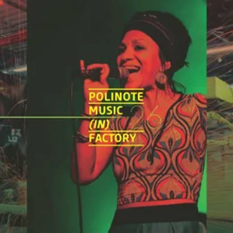

dom 29 nov · dalle 16:30
Polinote Music (in) Factory: 45 anni di memoria in musica
Evento organizzato nell’ambito del Polinote Music (in) Factory, il festival organizzato da Polinote che unisce la musica, la creatività e il mondo produttivo con eventi originali e gratuiti in location insolite a Pordenone e provincia. Performance: Musica, fotografia e spazio si…
 Indicazioni
Indicazioni
- Costi e prenotazioni
- Costo non indicato · Prenotazione non indicata
- Programma
- Programma da verificare. Apri la fonte ufficiale per orari e possibili aggiornamenti.
- In caso di maltempo
- Nessuna indicazione specifica pubblicata.
- Note
- Acquisito automaticamente dalla fonte.
L’EVENTO
Descrizione completa
Evento organizzato nell’ambito del Polinote Music (in) Factory, il festival organizzato da Polinote che unisce la musica, la creatività e il mondo produttivo con eventi originali e gratuiti in location insolite a Pordenone e provincia. ROS Srl, realtà specializzata nella lavorazione della lamiera e nella carpenteria metallica, apre i propri spazi alla comunità, trasformando il luogo di produzione in uno spazio di incontro, conoscenza e creatività. Il ricambio generazionale alla guida dell’azienda ha portato con sé una nuova apertura verso forme di comunicazione e coinvolgimento del territorio, valorizzando il rapporto tra le persone, il lavoro e la comunità. Per il Polinote Music (in) Factory 2026 , gli spazi di ROS diventano così lo spazio di un pomeriggio aperto a tutti, con attività pensate per grandi e piccoli: un’occasione per conoscere l’azienda attraverso lo sguardo di chi ci lavora e per scoprire come materiali, persone e creatività possano incontrarsi in modi inaspettati. Ore 16.30 · Factory Tour Un percorso guidato dai lavoratori di ROS alla scoperta dell’azienda, dei suoi spazi e delle attività che ogni giorno ne animano il lavoro. Ore 16.30 · Factory Lab “Il suono della fantasia” laboratorio per bambini e bambine dai 5 ai 10 anni
Che suono ha la nostra fantasia? Costruiamo insieme una scatola colorata dove all’interno si muove il suono di una storia, di un drago, di un orso o di una fata.
I bambini saranno accompagnati nella lettura di un libro illustrato dedicato al gioco e alla scoperta dei suoni. Poi creeremo insieme delle colorate scatole sonore che ci raccontano una storia per orecchie attente.
A cura di Sara Colautti – illustratrice Ore 18.00 · Concerto Un viaggio musicale che ripercorre i 45 anni di storia di ROS attraverso alcuni dei brani più iconici del repertorio musicale italiano. Michela Grena voce
Cesare Coletti chitarra
Giovanni Gorgoni basso
Luca Colussi batteria Un pomeriggio in cui musica, lavoro e comunità si incontrano, portando la cultura dentro il luogo di produzione e trasformando gli spazi dell’azienda in uno spazio aperto, condiviso e partecipato. Per info: tel. +39 0434 520754 · cell. +39 347 7814863 · info@polinote.it
IL PROGRAMMA
Programma e orari
Appuntamenti raccolti dalle fonti elencate. Dove manca un orario, non è ancora disponibile in questa scheda.
Programma pubblicato
- Ore 16.30 · Factory Tour
- Ore 16.30 · Factory Lab
- Ore 18.00 · Concerto
INFORMAZIONI UTILI
Prima di partire
- Controllare la fonte prima di partire.
ORGANIZZAZIONE